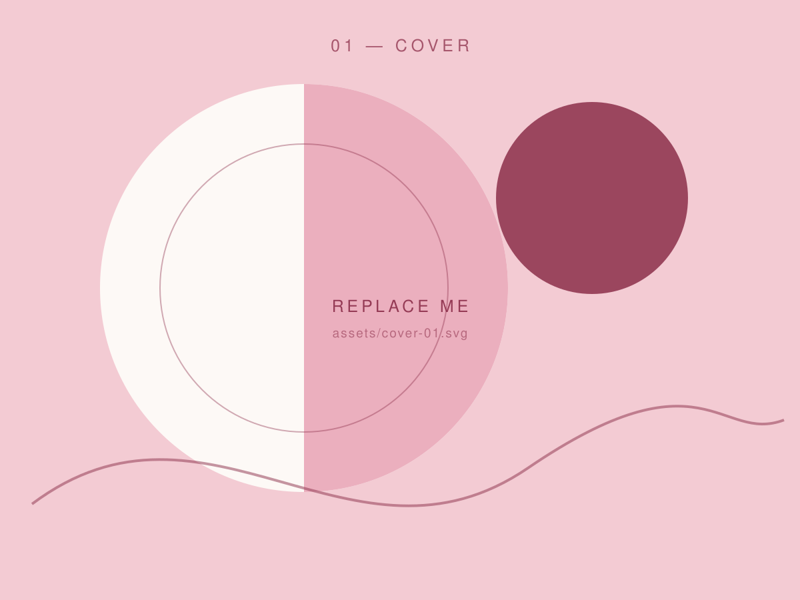

01 Festival FinderNoa van den Berg — CMD Designer
designing digital experiences with a little bit of chaos
I’m a CMD student & designer based in the Netherlands. I build digital things that are clear enough to use and weird enough to remember — somewhere between research, interface design and a little bit of creative coding.
explore my workAbout
a little
about me
I’m Noa — a CMD (Communication & Multimedia Design) student who likes the messy middle of a project: the part where research turns into a concept and a concept turns into something you can actually click.
My work sits around UX/UI, visual design, interaction design and creative digital concepts. I care about clear structure, generous whitespace and the small details that make an interface feel alive.
Skills
- UX/UI
- Visual Design
- Interaction Design
- Creative Coding
- Branding
- Unity
- Research & Product testing
Tools
- Figma
- Adobe Illustrator
- Adobe After Effects
- Adobe XD
- Adobe Photoshop
- Adobe InDesign
- Miro
- HTML
- CSS
- Unity
Contact
let’s make something cool.
Have a project, internship opportunity or just want to say hi?
Get in touch- Email hello@noavandenberg.nl
- LinkedIn /in/noavandenberg
- Instagram @noa.designs